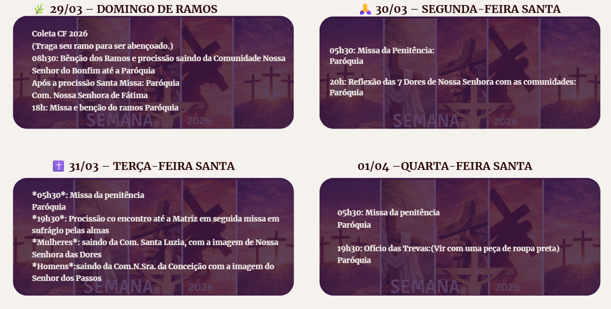

Paróquia Santos Apóstolos


A Igreja de Zinco, oficialmente conhecida como Paróquia Santos Apóstolos, foi fundada em 1966 para atender às necessidades espirituais e sociais da comunidade local. Desde então, tornou-se um símbolo de fé, acolhimento e solidariedade, reunindo gerações de famílias em celebrações, eventos e ações sociais. Ao longo de sua trajetória, a igreja passou por diversas transformações, sempre mantendo o compromisso com a evangelização, a promoção da justiça e o apoio aos mais necessitados. Suas portas estão sempre abertas para quem busca conforto, orientação e um espaço de convivência fraterna. Em 2026, celebramos com orgulho os 60 anos de fundação da Paróquia Santos Apóstolos, agradecendo a todos que contribuíram para construir essa bela história de amor, fé e serviço à comunidade.

Terça-Feira e Sexta-Feira 20:00
Quarta-Feira 15:00
Domingo 07:00 | 10:00 | 18:00

Quarta-Feira (após a missa) ou
com agendamento prévio, na secretaria.
(11) 95065–1130

Terça a sexta-Feira
08h – 12h e 12h – 18h
Sábado
08h – 12h e 13h – 18h

Comunicamos que a paróquia não marcará mais intenções antes do início da celebração. As intenções não agendadas na secretaria paroquial poderão ser colocadas no recipiente dourado ao lado da imagem do Senhor Morto e serão conduzidas ao altar durante a missa para oração. Antes da missa, a marcação de intenções ficará restrita apenas aos 1º ao 7º dia de falecimento. As intenções devem ser marcadas na secretaria paroquial.
📞 (11) 95065-1130


